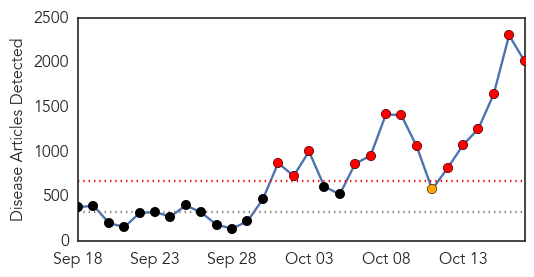
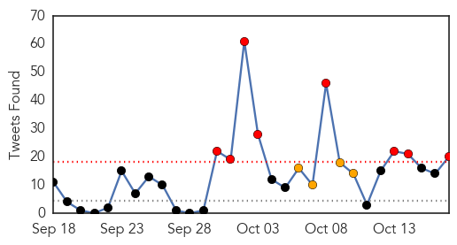
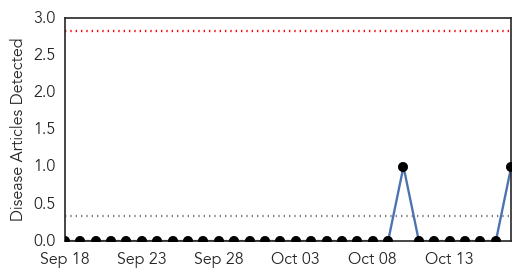

Ebola
30-Day Web Trend
14 alerts, 1 warnings

30-Day Twitter Trend
14 alerts, 3 warnings

Article Locations

Article Confidences

Top Articles:
- 1.000
- Questions and answers about Ebola
- 1.000
- Nurse with Ebola moved to special isolation unit in MD
- 1.000
- Nurse with Ebola moved to special isolation unit in MD
- 1.000
- Nurse with Ebola moved to special isolation unit in MD
- 1.000
- The Latest: Ebola in the United States
- 1.000
- U.S. health care worker has Ebola
- 1.000
- NZ 'needs to be prepared for Ebola'
- 1.000
- Switzerland: WHO declares Senegal Ebola-free
- 1.000
- Frequently asked questions
- 1.000
- World Fears Mount That Ebola Battle Being Lost
- 1.000
- An Ebola travel ban would be completely unprecedented; Here's wh
- 1.000
- Ebola Nurse From Dallas Transferred to Atlanta Medical Center
- 1.000
- Texas Health Care Worker With Ebola Took Commercial Flight on Monday: CDC
- 1.000
- Are the CDC doing enough to stop Ebola in the US?
- 1.000
- Ebola plan in place at local hospitals
- 1.000
- Nurse with Ebola moved to special isolation unit in MD
- 1.000
- KFVS12 News & Weather Cape Girardeau, Carbondale, Poplar Bluff
- 1.000
- Ebola crisis: Four new patients with suspected symptoms taken to hospital in Spain
- 1.000
- Texas nurse who treated Ebola victim Thomas Duncan quarantined on cruise ship in Caribbean
- 1.000
- Ebola: US officials investigate Ohio flight Amber Vinson was on three days earlier
- 1.000
- UN Ebola fund aimed at reaching $1bn to fight deadly virus has received just $100,000 so far
- 1.000
- Ebola timeline: How the deadly virus worked its way across western Africa and the rest of the world
- 1.000
- Ebola crisis: How one man and his ambulances offer hope to Liberia’s victims
- 1.000
- Ebola: Don't rely on vaccine to curb epidemic this summer, say drug firms
- 1.000
- Obama names former Biden aide Ron Klain as 'Ebola czar'
- 1.000
- US health boss admits: We don't know how two nurses caught Ebola
- 1.000
- 'We Made Mistakes' in Ebola Case
- 1.000
- Number of people being checked for Ebola surges toward 1,000
- 1.000
- Ebola: The Basics
- 1.000
- Karachiites face serious Ebola threat as govt hospitals ignore WHO guidelines
- 1.000
- Perry calls for travel restrictions to prevent spread of Ebola
- 1.000
- Ebola 'czar' named by White House
- 1.000
- Ebola latest: Obama mulls action as Texas tries to get ahead of virus
- 1.000
- Nurse with Ebola moved to special isolation unit in MD
- 1.000
- Ebola 'czar' named by White House
- 1.000
- Perry calls for travel restrictions to prevent spread of Ebola
- 1.000
- Ebola 'czar' named by White House
- 1.000
- Nurse with Ebola moved to special isolation unit in MD
- 1.000
- WAFB 9 News Baton Rouge, Louisiana News, Weather, Sports
- 1.000
- West Milford Hewitt Newfoundland NJ
- 1.000
- Analysis - U.S. health agency chief faulted over confusing Ebola messages
- 1.000
- WHO admits fudging Ebola response, blames ‘incompetent staff’, swine flu experience — RT News
- 1.000
- Ebola: What Should We Do Now?
- 1.000
- Amid Ebola Panic, Separating Fact From Fiction
- 1.000
- What is Going Viral is not a Virus
- 1.000
- Worst Ebola outbreak on record tests global response
- 1.000
- No Ebola epidemic in US without 'mutation
- 1.000
- Experimental Canadian Ebola vaccine to be shipped to Geneva for trials - National
- 1.000
- Ebola Scare: Stay informed but don’t panic
- 1.000
- Hospital Official 'Sorry For Mistakes'
Showing top 50 articles...
Top Tweets:
- 0.983
- RT: The World Health Organisation has declared Senegal free of the Ebola virus
- 0.957
- RT: AP: World Health Organisation admits botching attempts to stop the Ebola outbreak in West Africa
- 0.955
- Ebola virus dried on surfaces such as doorknobs and countertops can survive for several hours; however, virus in body fluids (1/2)
- 0.902
- RT: @Emergency_USA on List: "How You Can Help Fight The Ebola Outbreak In West Africa" http://t.co/1uH6Eujvik Ebol…
- 0.852
- If not symptomatic, they are not contagious. For Ebola to spread requires direct contact w/ infected person w/ symptoms. (2/2)
- 0.834
- No. Ebola cannot be transmitted through the air. It is not a respiratory disease like the flu. (1/2)
- 0.824
- Ebola info for local media, health officials & humanitarian orgs are a lifeline in the fight against the virus http://t.co/22DMZumaui
- 0.782
- Ebola virus dried on surfaces such as doorknobs and countertops can survive for several hours. Direct contact means (1/3)
- 0.772
- No. There is no evidence that mosquitos or other insects can transmit Ebola virus. http://t.co/UOMbii8pas
- 0.766
- RT: The Ebola epidemic in west Africa poses a catastrophic threat to the region, and could yet spread further http://t.co/Ief…
- 0.755
- Ebola Facts: When did Ebola arrive and spread at a Dallas hospital? http://t.co/TkvIZQjcjt http://t.co/2qRasFoTim
- 0.754
- There is no evidence that mosquitos or other insects can transmit Ebola virus. http://t.co/UOMbii8pas
- 0.746
- RT: A lay-czar? MT Ron Klain, reported candidate for Ebola czar, “no extensive bkground in health care” http://…
- 0.742
- WHO: Ebola continues to expand geographically, but fewer new cases reported in Liberia http://t.co/Y6Q62M8EL1
- 0.742
- Travel ban for Texas health care workers in Ebola case http://t.co/0EB6S5vKXM
- 0.721
- RT: Symptoms of the Ebola virus may manifest themselves in a day or two or they could wait weeks http://t.co/iuaRZJ8rX6 http:…
- 0.701
- Ron Klain to be named Ebola “Czar”; Senegal declared Ebola free by WHO. HealthSecurity http://t.co/H1JhGDbj22
- 0.701
- In affected countries in West Africa, MSF is running six Ebola centres with 600 beds & 3,253 staff: http://t.co/FqrcTBsxpD
- 0.693
- CDC, Dallas hospital feel heat as Ebola fears grow http://t.co/MPw8YgaN8n
- 0.666
- Nurse with Ebola: 'I'm doing really well' http://t.co/8mdosSgmIH TackleEbola
- 0.625
- accepts the ShakeEbolaOff Challenge for ! Who's next? EndEbolaNow ebola https://t.co/zfO0qLfUlh
- 0.624
- Should be someone with extensive Ebola experience or in Hospital infection control? Not many of both.
- 0.615
- RT: Analysis: How SARS pandemic offers lessons for Ebola http://t.co/omP0MVnojp Africa
- 0.607
- Recent Ebola pledges and deployments had "no impact so far" - MSF http://t.co/bKNXVgvaZE
- 0.601
- RT: Ron Klain, reported candidate for Ebola czar, known as a good manager but "no extensive background in health care." ht…
- 0.598
- Yes, you are safe. Incubation period is 2-21 days. Symptoms may appear anywhere from 2 to 21 days after exposure to Ebola. (1/2)
- 0.579
- Video feature: Fighting Ebola Street By Street http://t.co/tINbG90yNF ebola endebolanow spreadawarenessnotfear westafrica
- 0.569
- Airline contacting passengers on same flights as nurse infected with Ebola http://t.co/ds0w8hXgLV
- 0.569
- If person w/ Ebola sneezes and saliva/mucus contacts another person’s eyes, nose, mouth or open cut, disease may be spread.
- 0.565
- Ebola is killed with EPA-registered hospital disinfectants. http://t.co/Pk598neWhc
- 0.552
- Based on new info related to 2nd Dallas HCW who tested positive for Ebola, CDC is expanding passenger notification http://t.co/Bki70FxoVh
- 0.537
- Our next EbolaFact is about how long the virus lives on surfaces, a common question about Ebola. http://t.co/ekLEdM4o3z
- 0.537
- Our next EbolaFact is about how long the virus lives on surfaces, a common question about Ebola. http://t.co/1NGti2pwFX
- 0.535
- Ebola is not contagious until symptoms appear http://t.co/VcvMgvZqgs
- 0.529
- Ebola is a very stable virus w/ a very slow mutation rate. Scientists have no reason to believe that a (1/2)
- 0.528
- AFD BLog `@WHO Ebola Roadmap Update – Oct 17th' http://t.co/ECqW9Mdjfc
- 0.521
- RT: Now that people are paying attention to Ebola. Next up: eradicate it from West Africa. https://t.co/1vmd829Q2i via…
- 0.521
- RT: Based on new info related to 2nd Dallas HCW who tested positive for Ebola, CDC is expanding passenger notification http://t.co/…
- 0.519
- RT: Good Ebola news (has that sentence been typed b4?): Today, Senegal is Ebola-free, says. But still in line of fire so v…
- 0.517
- RT: "What we need is a hero who can think like a virus." - @matthewherper 's interesting take on & Ebola. http://t…
- 0.514
- Ebola can enter through broken skin or unprotected mucus membranes.http://t.co/VcvMgvZqgs
- 0.510
- See how women in Sierra Leone are mobilizing to halt the spread of Ebola http://t.co/0ayNku5uwC http://t.co/OAMDVwBa57 via
- 0.509
- Latest UN, UK etc promises&deployments "not had any impact on ebola epidemic", won't significantly "for 4-6 weeks" - MSF. More on BBC soon
- 0.503
- RT: "There is a deep-seated fear among some Americans that an Ebola outbreak could make the country turn to science." http://t.c…
Mumps
30-Day Web Trend
0 alerts, 0 warnings

30-Day Twitter Trend
0 alerts, 0 warnings

Article Locations

Article Confidences

Top Articles:
Top Tweets:
-
No tweets found for Oct 17, 2014